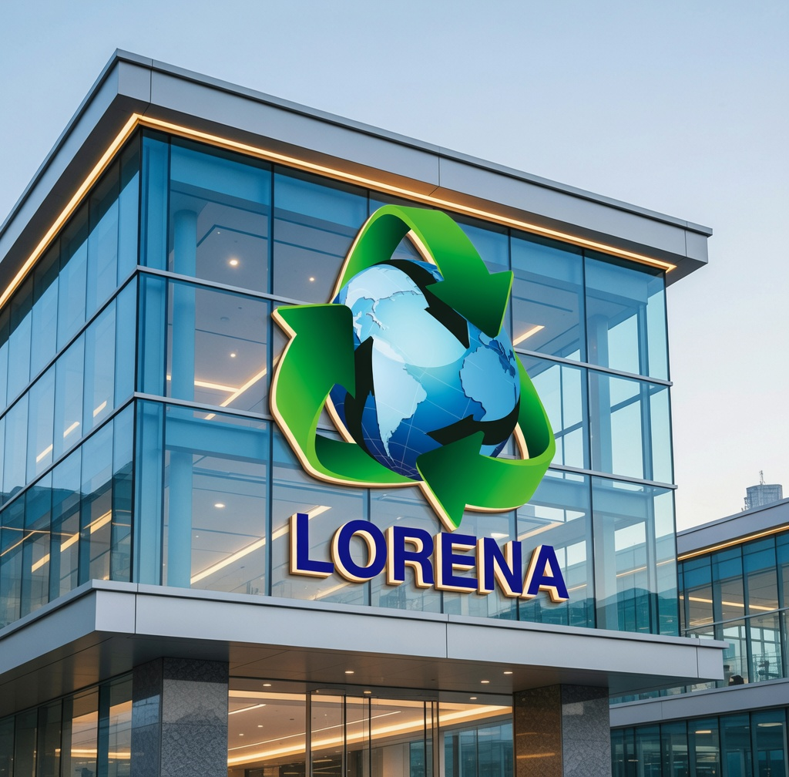
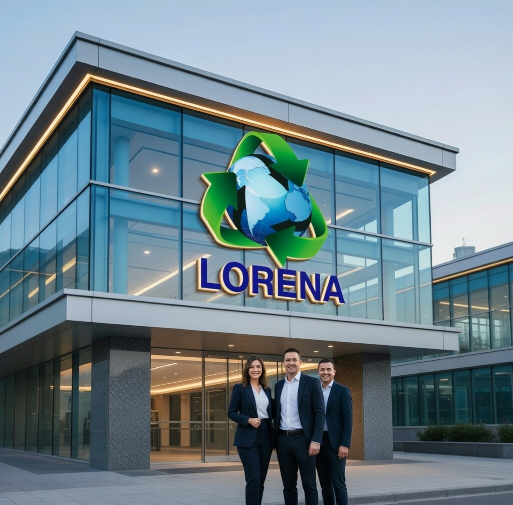

A Empresa Lorena Reciclagem é uma organização comprometida com a sustentabilidade e a preservação do meio ambiente. Atuando no setor de reciclagem, a empresa tem como principal objetivo reduzir os impactos ambientais por meio do reaproveitamento de materiais descartados, transformando resíduos em novos recursos. Com uma equipe qualificada e processos eficientes, a Lorena Reciclagem trabalha na coleta, separação e destinação correta de diversos tipos de materiais, como papel, plástico, vidro e metais. Além disso, a empresa busca conscientizar a população e outras organizações sobre a importância da reciclagem e do consumo responsável. A Lorena Reciclagem se destaca por sua responsabilidade ambiental, contribuindo para a diminuição da poluição, a economia de recursos naturais e a construção de um futuro mais sustentável para todos.

A história da Lorena Reciclagem é um exemplo inspirador de como pequenas atitudes podem se transformar em grandes mudanças. Tudo começou com um olhar atento e um coração inquieto diante de um problema cada vez mais visível: o acúmulo de lixo e o descarte inadequado de materiais recicláveis nas ruas e comunidades. Lorena, fundadora da empresa, sempre teve uma forte preocupação com o meio ambiente. Incomodada ao ver tantos resíduos sendo desperdiçados e prejudicando a natureza, ela decidiu que não poderia mais ser apenas espectadora dessa realidade. Com coragem e determinação, deu o primeiro passo: começou, sozinha, a recolher materiais recicláveis como papel, plástico, vidro e metais em sua vizinhança. No início, o trabalho era desafiador. Sem estrutura, equipamentos ou apoio financeiro, Lorena contava apenas com sua força de vontade e o apoio de familiares e amigos próximos. Mesmo assim, nunca desistiu. Aos poucos, sua dedicação começou a chamar a atenção da comunidade, e mais pessoas passaram a colaborar com a iniciativa, separando seus resíduos e contribuindo com a coleta. Com o crescimento da demanda, surgiu a necessidade de organização. Lorena então começou a estruturar melhor o projeto, investindo em equipamentos básicos, criando processos de separação mais eficientes e buscando conhecimento sobre o setor de reciclagem. Foi nesse momento que a iniciativa deixou de ser apenas um esforço pessoal e começou a se transformar em um verdadeiro negócio. Determinada a ir além, ela formalizou a empresa, dando origem à Lorena Reciclagem. A partir daí, novos caminhos se abriram: parcerias com comércios locais, empresas e instituições foram estabelecidas, ampliando o alcance do trabalho. A empresa passou a atuar não apenas na coleta e triagem de materiais, mas também na conscientização ambiental, promovendo a importância da reciclagem e do consumo responsável. Com o passar dos anos, a Lorena Reciclagem se consolidou como uma referência na área, destacando-se pela responsabilidade, eficiência e compromisso com a sustentabilidade. Mais do que uma empresa, tornou-se um agente de transformação social, gerando empregos, incentivando práticas sustentáveis e contribuindo para a preservação dos recursos naturais. Hoje, a Lorena Reciclagem segue crescendo, inovando e buscando novas formas de impactar positivamente o meio ambiente. Sua história mostra que grandes mudanças começam com atitudes simples — e que, com dedicação, visão e propósito, é possível construir um futuro melhor para todos.

A história da Lorena Reciclagem começou com a união de duas pessoas determinadas a fazer a diferença: Lorena e Guilherme. Desde cedo, ambos se incomodavam com a quantidade de lixo descartado de forma incorreta e com os impactos que isso causava no meio ambiente e na vida das pessoas. Lorena sempre teve uma visão mais sensível e consciente, preocupada com a natureza e com o futuro do planeta. Já Guilherme possuía um espírito empreendedor, sempre buscando soluções práticas e ideias que pudessem crescer e gerar impacto positivo. Quando se conheceram, perceberam que tinham o mesmo propósito — e decidiram transformar essa vontade em ação. No início, tudo era muito simples. Com poucos recursos, os dois começaram coletando materiais recicláveis nas ruas e em suas próprias comunidades. Usavam o que tinham à disposição e enfrentavam dificuldades diárias, mas nunca deixaram que isso os desanimasse. Pelo contrário, cada desafio só aumentava a vontade de fazer o projeto dar certo. Enquanto Lorena cuidava da separação dos materiais e da conscientização das pessoas, explicando a importância da reciclagem, Guilherme organizava a parte operacional, pensando em como melhorar a coleta e expandir o trabalho. Aos poucos, a dedicação dos dois começou a chamar atenção, e mais pessoas passaram a colaborar. Com o tempo, o pequeno projeto foi crescendo. Surgiram parcerias com comércios locais e empresas, e a necessidade de organização fez com que Lorena e Guilherme dessem um passo maior: formalizar o negócio. Assim nasceu oficialmente a Lorena Reciclagem, uma empresa construída com esforço, coragem e propósito. Hoje, a Lorena Reciclagem é muito mais do que uma empresa — é um símbolo de transformação. A trajetória de Lorena e Guilherme mostra que, com união, persistência e um objetivo claro, é possível começar do zero e construir algo que impacta positivamente o mundo. E eles continuam trabalhando todos os dias com o mesmo sonho que deu início a tudo: cuidar do meio ambiente e construir um futuro melhor para todos.